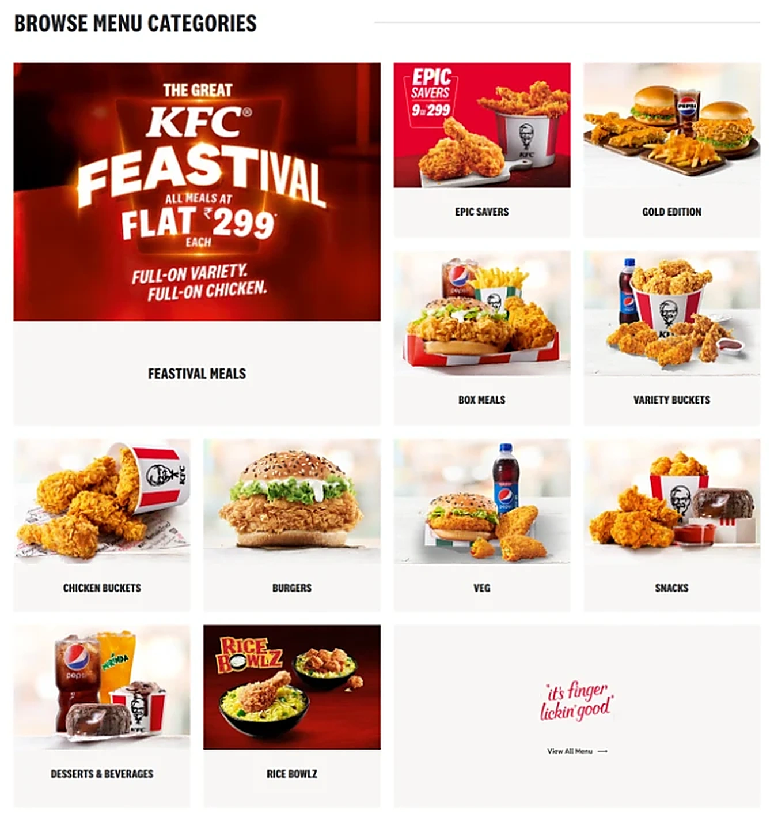
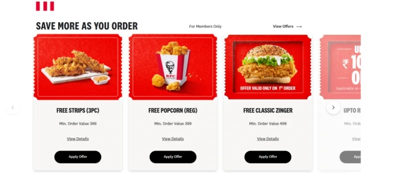

Personal concept for practice. Not affiliated with or endorsed by KFC.
kfc.co.in · redesign concept
The problem.
The current KFC home page is cluttered. A festive banner leads the page, there is no clear navigation, and a hungry user has to go through every step and add items to the cart before checkout even appears.
01
Cluttered layout
Banners, a mixed-size tile grid and a cut-off carousel compete for attention.
02
No clear navigation
Only Menu and Deals up top; it is not clear where to go to order.
03
Long road to checkout
Users must go through the whole flow and fill the cart before checkout shows up.
Current site vs redesign.
01The first screen
Current
A festive banner takes over the first screen.
You must pick Delivery, Pick up or Dine in before anything else.
Only Menu and Deals in the top bar.
Redesign
A warm hero of people enjoying a meal.
Order, Menu, Deals and Find KFC in the top bar.
A visible Order now button, always one click away.
02Finding food
Current

Eleven tiles of mixed sizes, one repeating the banner.
Hard to scan; every tile looks equally important.
Redesign
One clean row of round food icons.
Burgers, Rice bowls, Beverages, Ice creams, Popcorn and Leg pieces at a glance.
03Offers and deals
Current

Coupons in a sideways carousel, cut off at the edge.
One Order now or Grab deal button on every card, to act straight away.
04Choosing how to order
Current
A small toggle that blocks the page until you choose.
Redesign
Three large choices, Delivery, Pickup and Dine-in, once you know what you want.
Project overview.
Summary
A redesign of the KFC India home page that follows how people decide what to eat: see the food, spot the best offer, compare a few deals, then pick how to get it.
How the page is ordered
Hero photo and quick food categories.
Big savings first, then exclusive deals and buckets.
Combos and the Colonel’s Club rewards.
Delivery, pickup or dine-in, then a grouped footer.
The redesign, section by section.
Hero
A warm, appetising first look
The page opens with a simple top bar (Order, Menu, Deals, Find KFC, account and Order now) and a large photo of a family sharing a KFC meal.
Categories
Jump straight to what you want
Round food icons for Burgers, Rice bowls, Beverages, Ice creams, Popcorn and Leg pieces sit right under the hero.
Offers
Savings up front
Epic Savers puts the biggest offers first in large cards, Wednesday Saver at 56% off, Family Feast at ₹799 and Ice cream at 30% off, each with one Order now button.
Deals
Deals you can scan in seconds
Exclusive deals use bold red cards with the item, price and one Grab deal button, so prices are easy to compare.
Buckets
A bucket for every mood
Crispy Buckets repeat the same card pattern for the signature buckets, from Ultimate Savings to peri-peri wings.
Combos & rewards
Combos, and a reason to come back
Combo pictures sit beside a Join the Colonel’s Club card that invites people into KFC Rewards for free fries on their next order.
Order
Order your way
Three large, clear choices close the page: Delivery, Pickup and Dine-in.
Footer
Everything else, neatly grouped
The footer groups links into KFC India, Legal, KFC Food and Support, with Find a KFC.